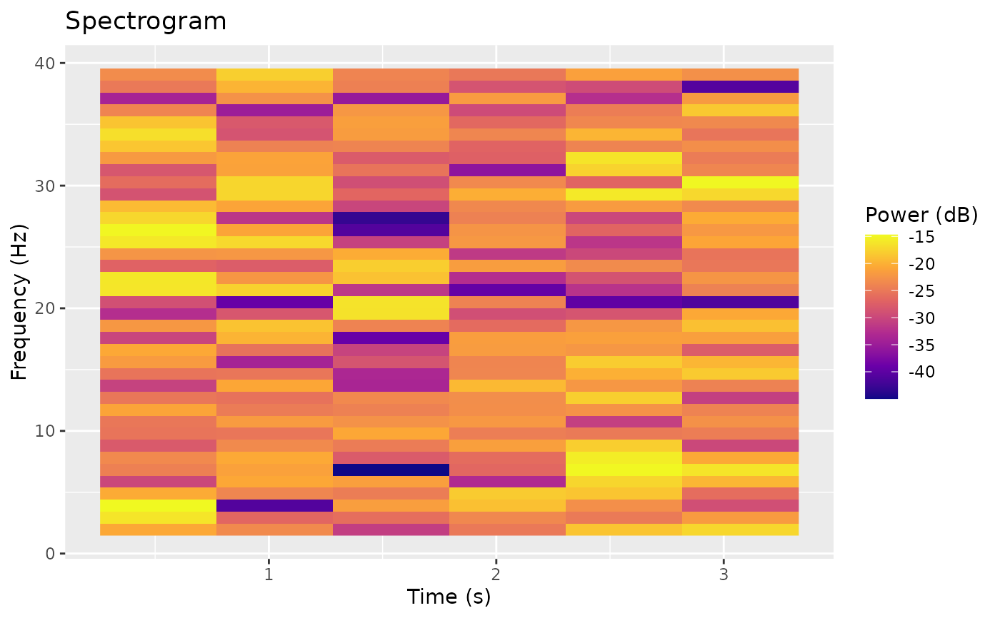

Functions for time-frequency analysis including wavelet transforms, spectrograms, and band power extraction. Compute spectrogram (Short-Time Fourier Transform)
Usage
spectrogram(
x,
window_size = 256L,
overlap = 0.5,
window_type = c("hanning", "hamming", "blackman", "rectangular"),
channel = 1L,
sample = 1L
)Value
A list with the following components:
- power
Power spectrogram matrix (frequency x time)
- frequencies
Numeric vector of frequencies in Hz
- times
Numeric vector of time points in seconds
- sampling_rate
The sampling rate used
- window_size
Window size in samples
- overlap
Overlap fraction
Details
Computes the spectrogram using STFT with proper power spectral density normalization. The returned power values are one-sided PSD estimates in V^2/Hz (non-DC/Nyquist bins are doubled).
See also
waveletTransform() for wavelet-based time-frequency analysis,
plotSpectrogram() for visualization, bandPower() for band power
extraction, fftSignals() for simple FFT.
Examples
# Create example data
pe <- PhysioExperiment(
assays = list(raw = matrix(rnorm(1000 * 4), nrow = 1000)),
samplingRate = 250
)
# Compute spectrogram for channel 1
spec <- spectrogram(pe, channel = 1)
# Plot spectrogram
plotSpectrogram(spec, freq_range = c(1, 40))
